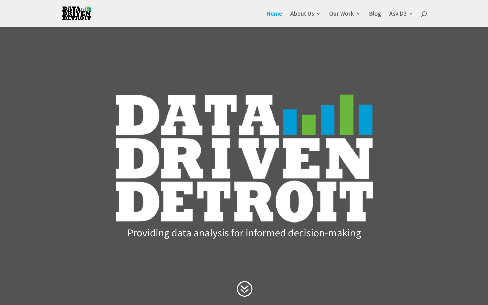

Data Driven Detroit

Project Type: User Experience Design, User Experience Research
Date: January 2018 - April 2018
Role: User Experience Designer, User Experience Researcher
Work Setting: Team of 4 collaborating with other student teams and multiple professional clients
Goal: Provide community members in and around Detroit with a simple means of accessing, understanding, and using open data to empower informed decision making
The Project
Overview
My team, made up of four students from the University of Michigan School of Information, is working collaboratively with Data Driven Detroit (D3), the Downtown Detroit Partnership, teams from the Stephen M. Ross School of Business and the School of Social Work at the University of Michigan, and numerous faculty members from U of M to plan and design solutions for a city-wide data coalition in Detroit, currently titled, "Detroit Data Utility." This coalition will revolutionize how open, accessible data is used to empower informed decision making in Detroit, helping Detroit become a “smart city.”
The implications and impact of this project span much further than the usual niche market that my projects cater to. Our work will actually make a difference in how Detroit will transform into a “smart city” that makes use of data to drive informed decision making and planning. This project has the potential to shape how one of the fastest developing cities in America functions and grows throughout the coming years.
Work in Progress
This current portion of the project is to be completed between over the span from January to late April of 2018. Work will continually be added to this page as the project continues, so check back often to see what we have been working on.
Data Driven Detroit
As a subset of this project, my team is also working directly with Data Driven Detroit to redesign the D3 website - primarily the D3 Toolbox - to help users better understand the function and capabilities of the data and tools that are offered by D3. D3’s goal is to empower informed decision making in Detroit through the use of accurate, reliable, unbiased data. This redesign will help users make use the available data and tools to better inform the decisions they make while developing areas, services, and products that help rebuild and grow Detroit.
Our team meets weekly with D3 to discuss our progress with the project and collaborate on advancing the project to the next steps.
Detroit Data Utility
As stated above, the Detroit Data Utility is a city-wide data coalition in Detroit aimed at helping Detroit become a “smart city.”
We meet formally once a month with the teams from the School of Business and the School of Social Work to go over the progress each of our teams has made as well as plan the goals, requirements, and process for the next month of work. Between these meetings, we will be communicating with each other, organizing, and performing any collaborative work that is to be completed.
Research Phase
Competitive Analysis
While D3 looks at other organizations that do similar work to them as allies rather than competitors, we still wanted to get a better feel for what the field looks like in terms of digital product design.
We identified two primary direct competitors, Western Pennsylvania Regional Data Center and Shift Research Lab, that we would analyze, looking at general design choices around the navigation of their websites, the hero space on their sites, and the organization of assets on their sites (especially tools and data if available).
Looking at similar points as the direct competitors, our analysis of indirect competitors included Netflix, Kaggle, and Amazon.
We would like to continue our competitive analysis later on in the design phase after we compile our key findings from research and begin designing our solutions. This later competitive analysis will allow us to hone in on specific design problems that we will be working with and look at how other sites deal with these problems.
Heuristic Evaluation
To begin research on the project, we ran three heuristic evaluations of the D3 sites, each following the guides laid out by Nielsen Norman Group’s “10 Usability Heuristics for User Interface Design”. One on the current site that the public can view on the internet, one on the new prototype site that D3 has been developing (we have an agreement not to share this site aside from screenshots), and one on a D3 affiliated site titled Open Data Portal.
Current Site
- 4 issues regarding help and documentation with a severity level of 3 or higher on a scale of 1 - 5 (1 being not severe, 5 being extremely severe)
- 3 issues regarding flexibility and efficiency of Use with a severity level of 2 or higher
Open Data Portal Site
- 4 issues regard in aesthetic and minimalist design with a severity of 3 or higher (four of which have a severity of 4)
- 2 issues regarding match between system and the real world with a severity of 4
- 2 issues regarding recognition rather than recall, one with a severity of 3 and one with a severity of 5
Prototype Site
- 3 issues regarding consistency and standards with a severity rating of 3 or higher
- 4 issues regarding aesthetic and minimalist design with a severity rating of 3 or higher
It is important to note that these ratings are subjective and we use usability tests and interviews to validate the severity of each of the issue we discovered.
User Testing
Our heuristic evaluations revealed numerous issues with the current and prototype sites, but since our severity ratings were subjective, we needed to conduct usability tests to validate our claims.
Though D3’s data primarily focuses on the Metro Detroit area and therefore would be most relevant to Detroit residents, we decided to conduct our first usability tests with Ann Arbor residents. This was more convenient for us for recruiting and scheduling purposes and allowed us to work out any unforeseen issues with our usability tests before visiting Detroit to talk with a more ideal user-base. Traveling to Detroit would be beneficial to assess how users within the community interact with D3’s site.
Our team recruited participants for the three user groups, conducting five tests in total:
Urban Planners
- A faculty member of the Taubman College of Architecture and Urban Planning at the University of Michigan
Individuals that regularly work with data
- A senior at the University of Michigan studying information analytics
- A senior at the University of Michigan studying statistics and psychology
Individuals interested in community information but with little/no data experience
- A sophomore at the University of Michigan studying communications
- A senior at the University of Michigan studying English
Card Sorting
We conducted open card sorting with individuals using the content from D3’s Navigation Bar on their prototype.

First participant created four categories:
- D3 Assets
- About
- User Interaction
- Miscellaneous
Second participant created four categories:
- Who We Are
- History
- Resources
- Outliers (Blog)
Third participant created five categories:
- Core Product/Purpose
- “About” Info
- “Join” Info
- “Helpful” Info
- Outliers (Blog, Other Resources)
Key Findings
We label these findings as "preliminary" as we have not tested with Detroit-based users yet. We feel as though research with these Detroit-based users will produce more accurate or relevant results.
Findings from Usability Tests and Heuristic Evaluation
Unclear Mission and Role
When asked what they believe D3 does, many users just read the mission statement on the home page on both the current site and the prototype site. When prompted about what the mission statement meant, we received varied, vague responses.
- 3 of 4 user testers had trouble accurately explaining D3's mission and role based on the provided information.
- Not originally noted in heuristic evaluations
Hero space for the current D3 site
Hero space for the prototype D3 site
Unseen Search and Filtering
On the current site’s Portfolio page, the search and filtering mechanism is not obvious. Many users were drawn to the colored containers for tools, projects, datasets, etc. and didn’t notice that it was possible to search for a particular resource. Therefore, when asked to find a particular resource, users spent a long time searching each container instead of simply searching for the tool.
- 2 of 4 user testers did not notice search and filtering mechanism
- User testing validated this issue, which we had originally noted in heuristic evaluations
The search and filtering mechanism beneath the "Portfolio" title is ignorable next to the colorful content boxes
Ambiguous Title for Projects
Under the “Our Work” button in the navigation bar of the prototype is a page called “D3 Atlas.” The label is not a descriptive name and is misleading. It navigates to a page dedicated to showcasing projects, but when users were asked to find projects D3 had done in the past, two of the users failed to find the page.
- 2 of 4 user testers commented or displayed trouble with the ambiguity of the title.
- Note: The title "D3 atlas was recently changed to "D3 Toolbox" on the D3 prototype site.
The old title, "D3 Atlas," is seen in our earlier usability testing
Required Hover to See Necessary Information
The Prototype’s Toolbox page does not have any labels for the tools. Therefore all of the users have to hover over each tool/project in order to learn about it and potentially find the one they were looking for.
- 4 of 4 user testers displayed the need to hover over multiple tool/project in order to see information about each asset and find whichever tool or project they were looking for.
- 2 of 4 user testers searched through each tool on the "Toolbox" page in order to find the tool that they were looking for. In both cases this process took over 50 seconds.
- This issue was originally noted in the heuristic evaluations, though we feel as though we should increase the initial severity we assigned to the issue from 4 to 5.
Information is displayed for the top-left tool as the user hovers over the thumbnail image
Excessive Hover Effects and Animations
On the prototype site, an overuse of hover effects and animations are used for interactions, complicating a user’s access to important information. The prevalence and intensity of the animations disorients the user and hinders their ability to find this information quickly.
- 2 of 4 user testers commented and/or displayed concern with the numerous hover effects and animations.
- According to an Urban Planner that we tested with, “the flash is a little unnecessary.”
Users must hover over each face to see information about each member of the D3 team
Design Requirements
Must Have
- Better communicate what data is and why it is helpful in decision making
- Better communicate what D3 is and how it is useful
- Restructure listing of tools to be comprehensive and scalable
- Organize the site so important resources are salient for the user
Should Have
- Remove data jargon to make the site understandable
Nice to Have
- Improve the visual design of the site
Design Phase
Brainstorming
We began our design phase by listing and organizing ideas on how to address each of the four "Must Have" design requirements that we identified based on our research.

Next Steps
Visit Detroit
We are currently coordinating a trip with our counterparts from the School of Business and the School of Social Work in the coming weeks to test prototypes of our designs and run interviews with stakeholders and current/potential users of the D3 site.
With the findings we collect from Detroit, we plan to revise our personas and create user journeys in order to better assist our decision making in the design phase of this project.
Narrow Down Design Choices
In moving forward with our design phase, we will need to choose specific ideas from brainstorming that we would like to further explore. We will then proceed with sketching, wireframing, lo-fi prototypes, and hi-fi prototypes while constantly looking for user and stakeholder feedback. We are working to implement an agile workflow for our design phase that relies heavily on feedback in order to refine our ideas and solutions.
Check back often to see updates on this project